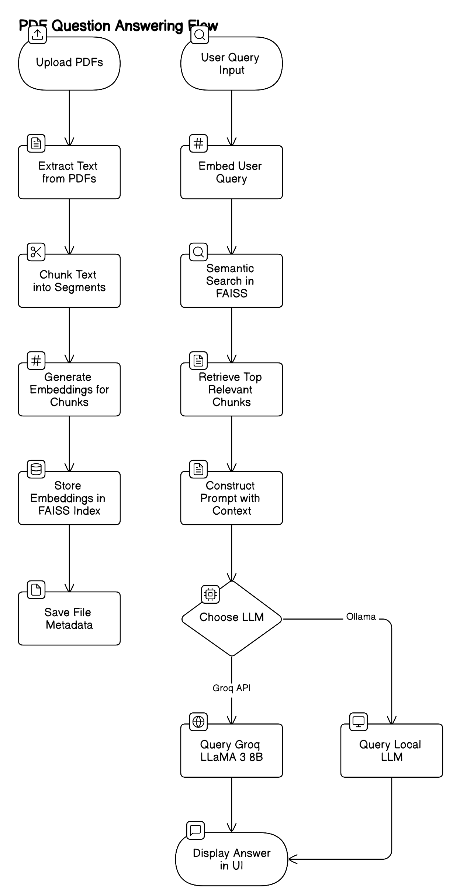
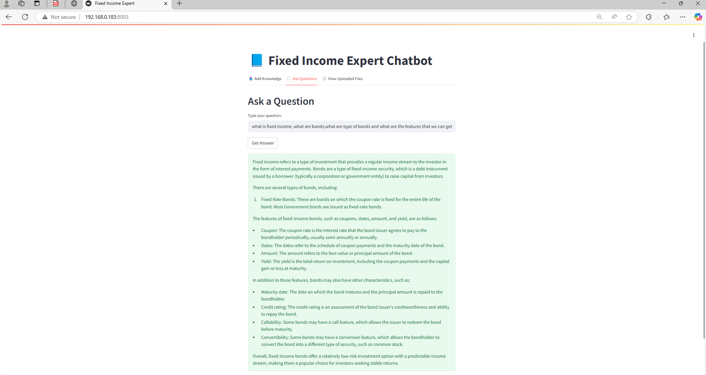
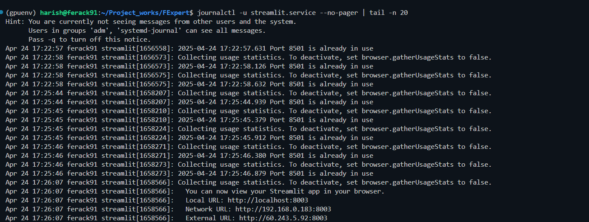
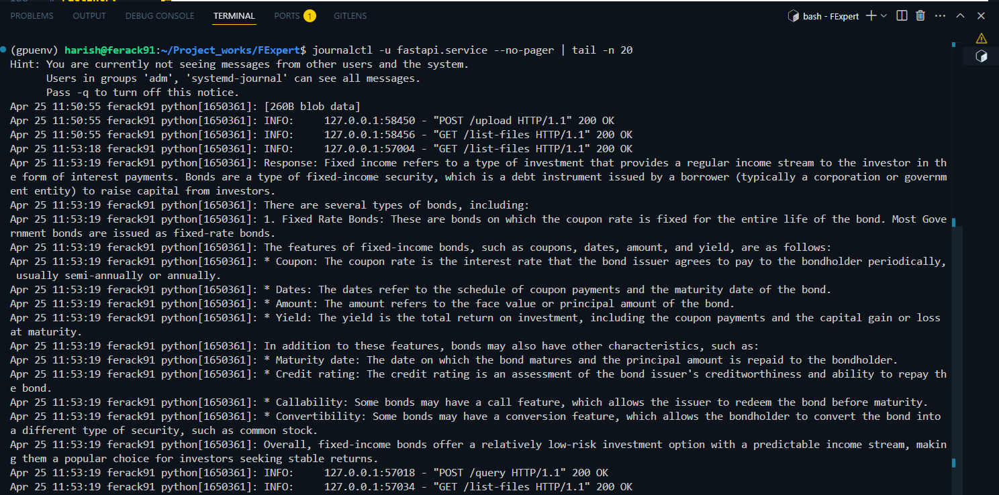

Fixed Income Expert System
RAG chatbot for financial bond documents
- LLaMA 3 8B via Groq
- FAISS semantic search
- FastAPI + Streamlit
- systemd deployment
An AI-powered Q&A system that lets internal teams upload bond documentation PDFs and query them in natural language. Built with FastAPI backend, Streamlit frontend, SBERT embeddings, FAISS vector search, and LLaMA 3 8B via Groq API — deployed as persistent Linux systemd services for internal organisational use.
What it does
The Fixed Income Expert System allows finance teams to upload internal bond PDFs — deal sheets, policy documents, callable bond schedules — and ask natural-language questions like "What is the maturity date for bond XYZ?" or "List all callable bonds issued after 2020." The system retrieves relevant context from FAISS and sends it to LLaMA 3 8B via Groq for a grounded, concise answer.
Features
- Knowledge Ingestion: Upload PDFs and extract structured, chunked content using heading-based and
RecursiveCharacterTextSplitterstrategies. - Semantic Search with FAISS: Find top-K relevant chunks using vector similarity with
sentence-transformers/all-MiniLM-L6-v2embeddings. - LLM Answering: LLaMA 3 8B via Groq API answers questions based only on retrieved context — no hallucination fallback.
- File Metadata Management: View all uploaded files with chunk statistics and upload timestamps.
- Clean Prompt Engineering: Optimised system prompts for precise, context-only responses.
- Modular Architecture: Clean separation of backend (FastAPI) and frontend (Streamlit) with REST integration.
API Endpoints
| Method | Endpoint | Description |
|---|---|---|
| POST | /upload | Upload and process a PDF file — extract, chunk, embed, index |
| POST | /query | Ask a natural-language question — returns grounded LLM answer |
| GET | /list-files | Retrieve metadata of all uploaded PDFs (chunks, timestamp) |
Prompt template
Project structure
Architecture overview

Full system architecture — PDF ingestion → FAISS indexing → SBERT embeddings → Groq LLaMA 3 → Streamlit UI
Component breakdown
- Streamlit Frontend (port 8501): Three views — upload PDF, ask question, view file metadata. Communicates with backend via REST.
- FastAPI Backend (port 8002): Handles PDF parsing (PyMuPDF), text splitting (LangChain), embedding (SBERT), FAISS indexing, and Groq LLM calls.
- SBERT MiniLM:
sentence-transformers/all-MiniLM-L6-v2— fast, lightweight semantic embeddings stored as.npyfiles. - FAISS: In-process vector index for top-K similarity search at query time.
- Groq API (LLaMA 3 8B): Ultra-fast inference — context chunks injected into prompt, model returns grounded answer only.
- Metadata store: JSON files track each PDF's chunk count, upload timestamp, and file name for the metadata view.
1. Upload PDF
- Text is extracted from the uploaded PDF using PyMuPDF (
fitz). - Split into logical chunks based on headings and subchunks via LangChain
RecursiveCharacterTextSplitter. - Each chunk is embedded using SBERT MiniLM — embeddings saved as
.npyfiles, chunks pickled. - Metadata (chunk count, upload time) stored as JSON.
2. Ask a Question
- The query is embedded with the same SBERT model.
- FAISS performs top-K similarity search across all indexed chunks.
- Top-K relevant chunks are injected into the LLM prompt as context.
- Prompt sent to Groq-hosted LLaMA 3 8B — returns a precise, context-grounded answer.
3. View uploaded files
- Lists all uploaded PDFs with metadata: number of chunks and upload timestamp.
Example queries
- "What is the maturity date for bond XYZ?"
- "Who is the issuer of the 2023 floating bond?"
- "List all callable bonds issued after 2020."
- "What is the coupon rate for the 5-year fixed bond?"
Tech stack
| Layer | Technology |
|---|---|
| Frontend | Streamlit |
| Backend | FastAPI + uvicorn |
| Embedding model | sentence-transformers/all-MiniLM-L6-v2 |
| Vector search | FAISS (in-process) |
| LLM provider | Groq API — LLaMA 3 8B |
| PDF parsing | PyMuPDF (fitz) |
| Text splitting | LangChain RecursiveCharacterTextSplitter |
| Deployment | systemd services on Linux server |
Streamlit UI

Upload & embed — PDF ingestion view
Metadata index — uploaded files with chunk stats

AI response — LLaMA 3 answering a bond query grounded in PDF context
systemd service logs

Frontend service — Streamlit running on server via systemd

Backend service — FastAPI uvicorn running on server via systemd
Local setup
Hosted as systemd services (internal server)
For persistent internal deployment, both services run as Linux systemd units that start automatically on boot and restart on failure.
FastAPI service
Streamlit service
Manage & monitor
Access
- FastAPI backend:
http://<server-ip>:8002 - Streamlit UI:
http://<server-ip>:8501